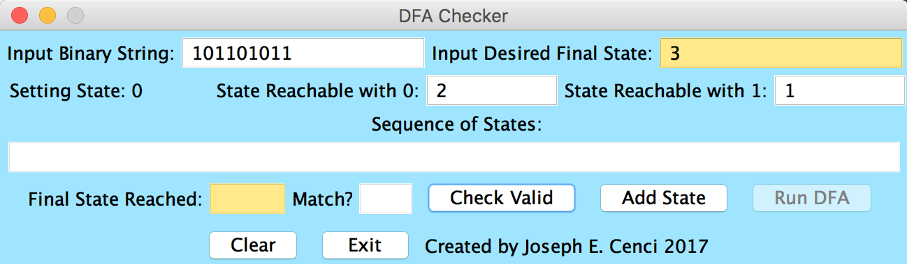
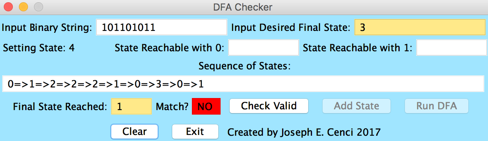

Java DFA Program
Basic Java DFA Program: The idea for this project was prompted after learning about Determinant Finite Automata in my CS303: Theory of Computation class. I challenged myself to create a Java program within 2 hours that would take as input a binary string and run it through a DFA that the user models.
This is the initial view of the GUI for the DFA Machine. Upon running the program: The user should enter in the desired binary string they wish to test on the DFA. This string can be any sequence of 0’s and 1’s. The user should enter in the next text field the number of the state that symbolizes the string that is accepted by the DFA. Once these two fields have been set, the user can begin to enter in the destinations for all of the states in the DFA. The first text field accepts a digit value of the state reached with a 0 input and the second text field sets the state reached for a 1 input. If the user wishes to have the input result in a kill state, thus terminating the thread, he or she can enter in a number less than 0. The DFA machine will not be able to run until the number of states entered is greater than or equal to the highest destination state in the DFA state list. It will also refrain from running if the desired end state is not contained within the DFA. The user can run through a created DFA as many times as needed and can change the binary string input and desired state following creation of the DFA. The “Check Valid” button will enable the “Add State” and “Run DFA” button only if both options are possible. It will also only allow the DFA to run if the string input contains only 0’s and 1’s.


